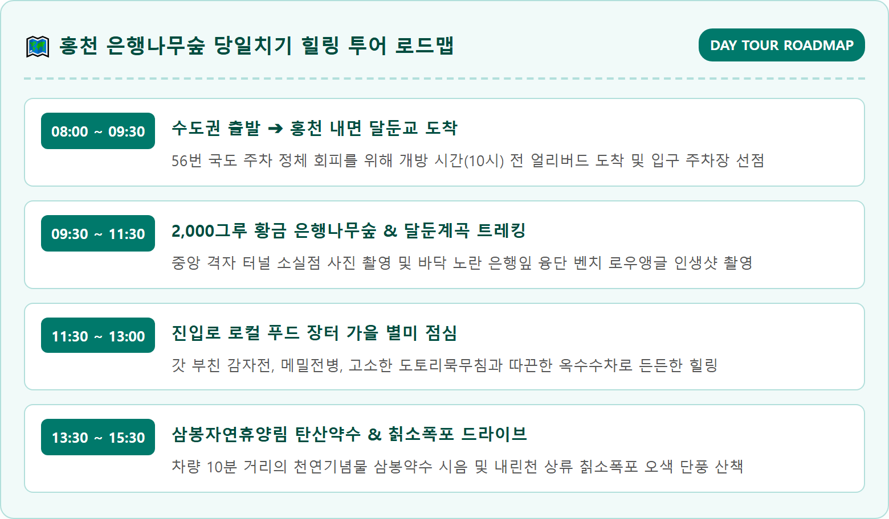
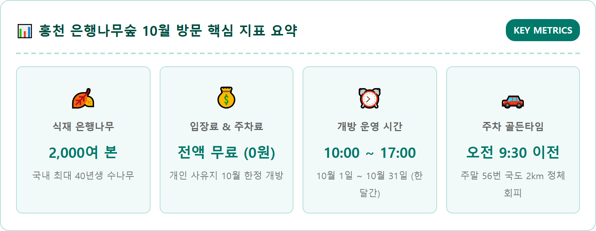
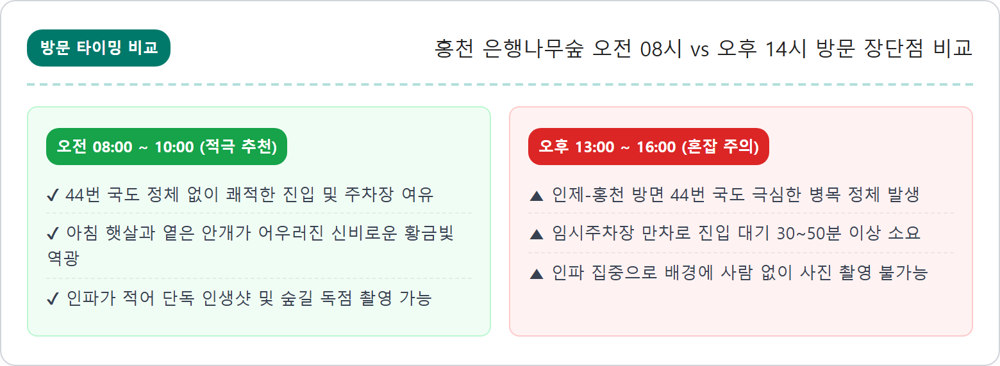
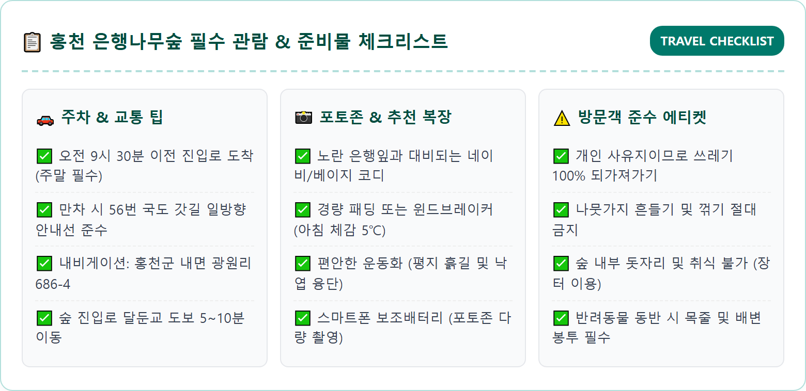

강원도 홍천군 내면 광원리에 자리 잡은 홍천 은행나무숲은 지자체가 조성한 일반적인 관광지가 아니라 한 개인의 지극한 순애보로 탄생한 사유지입니다.
1985년 농장주 부부가 만성 소화불량과 신경성 위장병으로 고생하던 아내의 쾌유를 바라며 삼봉약수 물이 좋다는 오대산 자락 달둔마을로 내려와 정착하였습니다. 부부는 아내의 건강 회복을 기원하는 마음으로 5m 간격으로 오와 열을 맞추어 은행나무 묘목 2,000여 그루를 심고 40여 년 동안 정성껏 가꾸어 왔습니다.
울창하게 자란 은행나무들이 가을마다 눈부신 노란빛 바다를 이루자 입소문을 타기 시작했고, 농장주는 2010년부터 지역 관광 활성화와 가을 정취를 나누기 위해 1년 중 가장 단풍이 아름다운 10월 한 달 동안만 숲을 무료로 전면 개방하게 되었습니다.
규칙적으로 곧게 뻗은 은행나무 줄기 사이로 쏟아지는 가을 햇살과 발목까지 푹신하게 밟히는 노란 은행잎 카펫은 인위적인 조형물이 가득한 유원지와는 차원이 다른 압도적인 평온함과 감동을 선사합니다.
홍천 은행나무숲은 사유지인 만큼 개방 시기와 관람 수칙이 매우 엄격하게 지켜집니다. 운영 기간 외에는 문이 굳게 닫히므로 헛걸음하지 않도록 날짜를 반드시 확인해야 합니다.
| 구분 항목 | 상세 내용 | 주의사항 및 핵심 팁 |
|---|---|---|
| 개방 기간 | 2026년 10월 1일 ~ 10월 31일 (31일간 무휴) | 10월 31일 오후 5시 이후 정문 폐쇄, 11월 방문 불가 |
| 관람 시간 | 매일 오전 10:00 ~ 오후 17:00 (입장 마감 16:30) | 오후 5시 정각에 전 구역 퇴장 안내 방송 진행 |
| 입장료 | 전액 무료 (0원) | 사유지 호의로 개방되므로 쓰레기 투기 및 나뭇가지 꺾기 엄금 |
| 2026 단풍 절정 | 10월 15일 ~ 10월 25일경 | 기온 급락 시 10월 하순에는 낙엽 카펫이 절정을 이룸 |
| 부대 시설 | 진입로 지역 농특산물 장터, 임시 화장실 | 숲 내부 음식물 섭취 금지, 반려동물 목줄 착용 필수 |

은행나무숲에 들어서면 정원 중앙을 가로지르는 넓은 흙길을 중심으로 좌우에 질서정연하게 은행나무들이 도열해 있습니다.
숲의 규모는 약 4만 ㎡(약 1만 2천 평)로 축구장 5개 크기에 달하지만, 경사가 전혀 없는 평지여서 어르신이나 어린아이를 동반한 가족도 가볍게 걸을 수 있습니다.
최고의 포토존 3곳:
• 중앙 격자 터널: 나무들이 정사각 격자 형태로 정확히 심어져 있어 동서남북 어느 각도로 카메라를 들어도 무한히 뻗어 나가는 노란 나무 기둥의 소실점을 담을 수 있습니다.
• 달둔계곡 인접 가장자리: 숲의 서쪽 가장자리는 맑은 달둔계곡 지류와 맞닿아 있습니다. 붉게 물든 활엽수림과 노란 은행나무가 계곡 바위와 어우러져 한 폭의 진경산수화를 자아냅니다.
• 낙엽 융단 쉼터: 10월 20일을 넘기면 나무에 달린 잎보다 땅에 떨어진 잎이 많아지며 바닥이 10cm 이상 두터운 황금 융단으로 뒤덮입니다. 이곳 벤치에 앉아 하늘을 올려다보는 로우 앵글 샷이 인스타그램 최고의 인기 구도입니다.
홍천 은행나무숲이 위치한 내면 광원리는 왕복 2차선의 56번 국도를 통해서만 접근할 수 있어 단풍 절정기 주말에는 극심한 병목 현상이 발생합니다.

은행나무숲 정문으로 향하는 달둔교 입구 마을 공터에는 매년 10월 한 달 동안 내면 마을 주민들이 직접 운영하는 정겨운 로컬 푸드 장터가 열립니다.
• 해발 600m 고원 농산물: 큰 일교차 덕분에 당도와 식감이 뛰어난 내면 고랭지 사과, 달콤한 찰옥수수, 자연산 송이버섯과 능이버섯, 건나물(취나물, 곤드레)을 산지 직송 가격으로 구매할 수 있습니다.
• 즉석 먹거리 쉼터: 갓 부쳐낸 노릇노릇한 메밀전병과 감자전, 따끈한 잔치국수와 도토리묵무침은 쌀쌀한 가을 아침 허기를 든든하게 달래줍니다. 주민들이 끓여주는 옥수수차 한 잔은 숲 산책 전후 몸을 따스하게 덥혀줍니다.

은행나무숲만 둘러보고 돌아가기 아쉽다면 차로 10~15분 거리에 위치한 천혜의 비경들을 함께 묶어 완벽한 강원도 가을 당일치기 코스를 완성할 수 있습니다.
| 연계 여행지 | 이동 거리 및 소요시간 | 주요 볼거리 및 추천 포인트 |
|---|---|---|
| 삼봉자연휴양림 & 삼봉약수 | 차량 12분 (약 9.5km) | 한국의 명수 100선에 선정된 탄산 천연기념물 약수. 톡 쏘는 철분 약수와 울창한 침엽수림 단풍 트레킹. |
| 칡소폭포 | 차량 7분 (약 5.2km) | 열목어가 서식하는 내린천 최상류 청정 폭포. 기암괴석과 붉은 활엽수 단풍이 어우러진 숨은 절경. |
| 오대산 월정사 전나무숲길 | 차량 약 50분~1시간 (진고개 방면) | 천년고찰 월정사 앞 1km 전나무 숲길 산책. 가을 단풍과 웅장한 전나무가 빚어내는 힐링 명소. |

홍천군 내면은 남한에서 가장 추운 고원 분지 지형 중 하나로, 10월 아침 기온이 영하권에 근접하거나 서리가 내릴 정도로 쌀쌀합니다.
자가용 운전이 부담스럽다면 시외버스를 이용해 홍천터미널에서 시내버스로 환승하여 찾아갈 수 있습니다.
• 동서울터미널 → 홍천시외버스터미널: 시외버스 15~20분 간격 수시 운행 (약 1시간 10분 소요).
• 홍천터미널 → 내면터미널 (내면 환승): 내면행 농어촌 시내버스 탑승 (약 1시간 20분 소요).
• 내면터미널 → 달둔마을(은행나무숲 입구): 광원리 방면 시내버스 탑승 후 '광원1리 달둔' 정류장 하차 (약 15분 소요, 배차간격이 넓으므로 내면터미널에서 택시 이용 추천, 편도 약 15,000원 선).
홍천 은행나무숲이 16년째 무료로 개방을 이어올 수 있었던 것은 방문객들의 성숙한 시민의식 덕분입니다.
1. 가지 꺾기 및 훼손 절대 금지: 기념사진을 찍기 위해 은행나무 가지를 억지로 잡아당기거나 꺾는 행위는 나무에 치명적인 상처를 줍니다.
2. 쓰레기 되가져가기: 숲 내부에는 쓰레기통이 설치되어 있지 않습니다. 발생한 모든 쓰레기는 본인의 가방에 넣어 되가져가야 합니다.
3. 지정된 산책로 이용: 어린 묘목이 자라는 펜스 안쪽으로 무단 진입하지 말고 잘 닦여진 중앙로와 통로를 따라 걸어주시기 바랍니다.